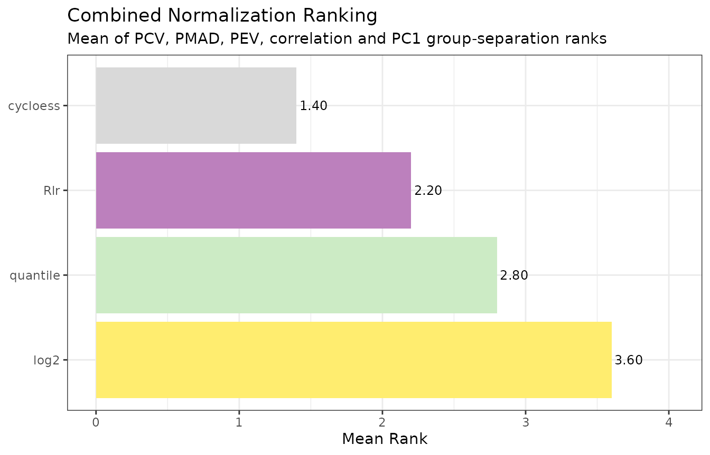
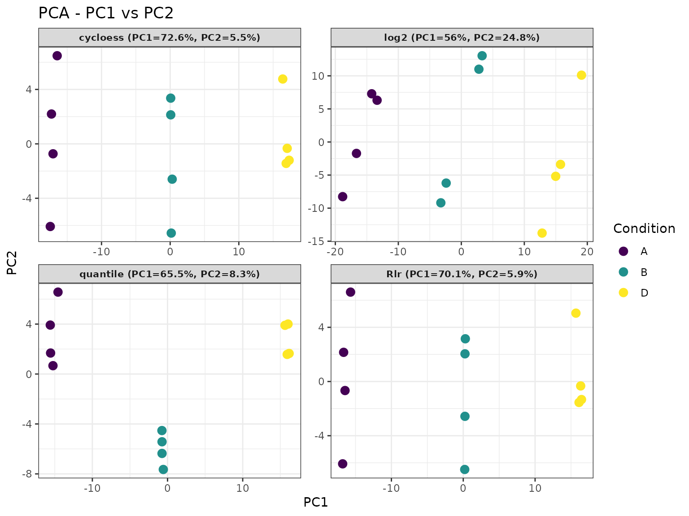
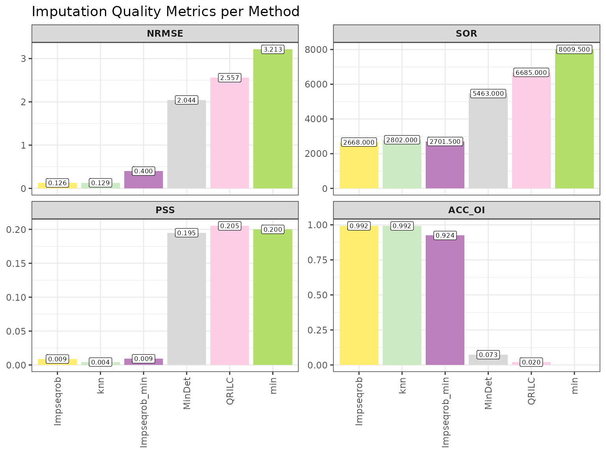
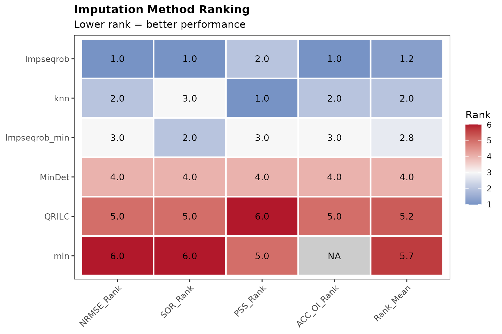

Choosing normalisation and imputation methods
Sergio Ciordia
Source:vignettes/choosing-methods.Rmd
choosing-methods.RmdIntroduction
Normalisation and imputation are not merely technical details. Normalisation changes the scale on which samples are compared, whereas imputation determines which values replace the measurements that were not observed. Both choices can therefore affect the proteins identified as differentially abundant.
There is no method that is best for every dataset. A useful choice should be based on the characteristics of the experiment, the missing-value pattern and diagnostics calculated from the data. This vignette follows that reasoning in four steps:
- describe the normalisation methods available in NADIA;
- compare candidate normalisation methods using quantitative metrics and diagnostic plots;
- describe and compare the available imputation strategies; and
- apply the selected combination and examine how alternative choices affect the differential abundance results.
NADIA exposes 13 normalisation labels and 20 imputation strategies. At the level of selectable methods, this gives 13 × 20 = 260 nominal normalisation–imputation combinations. Running and interpreting every combination is possible, but it is rarely an efficient first step. The metrics in this vignette provide a staged screen: first rank plausible normalisation methods using replicate agreement and condition separation, then compare imputation methods on the selected—or a small number of plausible—normalised assays. The resulting ranks reduce the search space; they do not by themselves prove that the highest-ranked combination is biologically correct.
The value 260 is a catalogue-level count rather than 260 fully
interchangeable completed matrices: log2 and
log2Norm are numerically redundant, and limpa
and none have special downstream interpretations. The count
nevertheless illustrates why a principled shortlist is preferable to
choosing a pipeline by trial and error.
The examples use nadia_dia, a preprocessed DIA dataset
included with NADIA. The comparison is performed without an external
ground truth. If an experiment contains spike-in proteins with known
abundances or expected fold changes, the best normalisation–imputation
combination is easier to establish. Such an experiment supplies an
external reference against which the complete pipeline can be
benchmarked, rather than relying only on internal properties of the
processed matrix. Proteins added at known different abundances show
whether the pipeline recovers the expected changes. Proteins kept at the
same abundance, by contrast, show how often the pipeline reports a
difference when none is expected. In that setting, the benchmarking
results should take priority over the internal ranks described here; see
vignette("benchmarking").
Installation and packages
While NADIA is under development, it can be installed from GitHub:
if (!requireNamespace("remotes", quietly = TRUE))
install.packages("remotes")
remotes::install_github("sciordia/NADIA", build_vignettes = TRUE)Only NADIA and SummarizedExperiment need to be attached
for the code in this vignette. Method-specific packages are called
internally when required.
library(NADIA)
library(SummarizedExperiment)
data(nadia_dia)Normalisation
What normalisation does
Protein intensities may contain systematic differences caused by sample preparation, injected amount, instrument response or other non-biological sources. Normalisation aims to reduce these unwanted differences while preserving the biological variation that the experiment was designed to measure.
An effective method should therefore satisfy two goals at the same time:
- replicate samples from the same condition should become more comparable;
- genuine differences between conditions should remain visible.
Making every sample look identical would reduce technical dispersion, but it could also remove biological signal. For this reason, no single diagnostic is sufficient on its own.
Normalisation methods available in NADIA
NADIA provides 13 normalisation options, which are selected with the
norm_method argument. Regardless of the option chosen, the
resulting protein-abundance matrix is expressed on the log2 scale.
| norm_method | Principle |
|---|---|
log2 |
Applies the log2 transformation and no additional normalisation. It is the natural baseline for comparison. |
log2Norm |
Applies the same log2 transformation. It is retained as a named benchmark method for compatibility. |
GlobalMedian |
Divides each sample by its total intensity and rescales the totals to their median before log2 transformation. |
GlobalMean |
Divides each sample by its total intensity and rescales the totals to their mean before log2 transformation. |
eqmedians |
Log2-transforms the data and shifts every sample so that all sample medians are equal. This approach is based on the equal-median normalisation used by MSstats. |
medianNorm |
Divides raw intensities by the sample median, rescales to the mean of the sample medians and then applies log2. |
meanNorm |
Divides raw intensities by the sample mean, rescales to the mean of the sample means and then applies log2. |
vsn |
Uses variance-stabilising normalisation from the vsn
package to reduce the dependence between variance and mean
intensity. |
quantile |
Maps the empirical distribution of every sample to a common quantile
distribution using limma. |
quantile.robust |
Uses the median, rather than the mean, across sample quantiles to construct a reference distribution that is less sensitive to extreme samples. |
Rlr |
Fits a robust linear regression between each sample and the protein-wise median profile, then removes the fitted offset and scale. This approach is based on the global robust linear regression normalisation implemented in NormalyzerDE. |
MAD |
Aligns both the median and the median absolute deviation of every sample to the corresponding global values. |
cycloess |
Applies cyclic loess normalisation with limma,
correcting intensity-dependent differences between samples. |
log2 and log2Norm produce the same values.
Consequently, nm_run_normalizations(methods = "all")
retains the log2 baseline and skips the redundant
log2Norm assay, leaving 12 distinct assays for
comparison.
How normalisation methods are evaluated
NADIA combines quantitative measures of within-condition agreement with a measure of between-condition separation. Four of the measures follow the intragroup evaluation used by the PRONE package: PCV, PMAD, PEV and intragroup correlation.
| Rank | What NADIA calculates | Preferred direction |
|---|---|---|
Rank_PCV |
For each protein and condition, the coefficient of variation is calculated as . Values are averaged across conditions and summarised by the median across proteins. | Lower |
Rank_PMAD |
The median absolute deviation is calculated within each condition for every protein, averaged across conditions and summarised by the median across proteins. | Lower |
Rank_PEV |
The within-condition variance is calculated for every protein, averaged across conditions and summarised by the median across proteins. | Lower |
Rank_Cor |
Pairwise correlations are calculated between replicate samples within each condition and summarised by their median. | Higher |
Rank_Sep |
PCA is performed on complete protein profiles. A one-way ANOVA F-ratio measures separation of the PC1 sample scores by condition relative to variation within conditions. | Higher |
Rank_Final is the mean of these five ranks. The lowest
value is preferred. This combined criterion rewards agreement among
replicates without allowing dispersion alone to decide the result. That
qualification is important: the PRONE evaluation showed that reducing
intragroup variation does not necessarily identify the method that
performs best in downstream analyses.
The ranking should be read together with the diagnostic plots
returned by normalization_metrics():
-
boxplotanddensitycompare sample intensity distributions; -
pcv,pmadandpevshow within-condition dispersion across proteins; -
correlationshows agreement between replicate samples; -
pcaandmdsshow whether replicates cluster and conditions separate; -
scattercompares two samples directly, andqqassesses one sample against a normal distribution; -
metricsdisplays additional multivariate diagnostics; and -
final_rankingdisplays the combined ranking.
These plots answer different questions. A method should not be selected from a single attractive PCA or a single low dispersion value.
Comparing normalisation methods with NADIA
The first step builds a baseline SummarizedExperiment.
The second applies the candidate methods, storing each result as a
separate assay. Four methods are used here to keep the example concise;
omitting methods runs all distinct benchmark assays.
se_norm <- nm_prepare_se(nadia_dia, verbose = FALSE)
se_norm <- nm_run_normalizations(
se_norm,
methods = c("log2Norm", "cycloess", "Rlr", "quantile"),
verbose = FALSE)
assayNames(se_norm)
#> [1] "log2" "cycloess" "Rlr" "quantile"normalization_metrics() calculates the diagnostics and
returns both tables and plots. output_dir = NULL prevents
files from being written to disk.
nm <- normalization_metrics(
se_norm,
output_dir = NULL,
verbose = FALSE)
nm$final_rank
#> Method Rank_PCV Rank_PMAD Rank_PEV Rank_Cor Rank_Sep Rank_Final
#> 1 cycloess 1 1 2 1 2 1.4
#> 2 Rlr 2 2 1 3 3 2.2
#> 3 quantile 3 3 3 4 1 2.8
#> 4 log2 4 4 4 2 4 3.6The two similarly named elements have different roles but contain the
same ranking. nm$final_rank is the numerical table: its
five component columns are Rank_PCV,
Rank_PMAD, Rank_PEV, Rank_Cor and
Rank_Sep, and Rank_Final is their mean.
nm$final_ranking is the bar-chart representation of
Rank_Final from that table; it does not calculate an
additional ranking. The separately returned pc1_rank and
mds1_rank tables are optional diagnostics and are not
included in Rank_Final.
The first row is the preferred method under the combined criterion.
In this example, cycloess has the lowest
Rank_Final: it ranks first for PCV, PMAD and correlation
while retaining good separation between conditions. Rlr is
second, and the unnormalised log2 baseline ranks last.
The final ranking plot provides the same comparison visually. Shorter bars indicate a better mean rank.
nm$final_ranking
The PCA remains useful as a complementary check because it shows the individual samples rather than reducing the comparison to one score.
nm$pca
The selected normalisation method can be extracted directly:
norm_winner <- nm$final_rank$Method[1]
norm_winner
#> [1] "cycloess"Imputation
Why values are missing
Imputation replaces missing entries with estimates so that analyses requiring a complete matrix can be performed. The estimate should reflect a plausible reason for the value being absent. NADIA uses the following practical distinction:
- MAR (missing at random): the protein is present, but its intensity was not quantified successfully—for example because of poor chromatography, precursor interference or a missed match. Under this assumption, the gap is not itself evidence that the unknown intensity was low. Its value can therefore be estimated from patterns in the available measurements, such as similar protein profiles or related samples.
- MNAR (missing not at random): the protein is absent or its abundance is below the detection limit. Missingness depends on the unobserved abundance being low and therefore carries biological or measurement information. Replacing such a gap with a typical neighbouring value may erase that evidence, so a low-value or detection-aware method is generally more plausible.

Practical distinction between MAR and MNAR missing values in proteomics. MAR values are reconstructed from observed data structure, whereas MNAR values call for a low-value or detection-aware model.
An individual NA does not reveal why the value is
missing. MAR and MNAR are possible explanations that must be evaluated
using the experimental design, the overall distribution of missing
values and their relationship with observed intensity. Both mechanisms
may occur in the same dataset.
How NADIA represents missing intensities
By the time the data enter the analysis, an unreported intensity is
represented as NA. How that NA is created
depends on the input format. In a long Spectronaut report, a protein
that was not quantified in a particular run is usually absent from the
report; when NADIA constructs the wide protein_quant table,
the corresponding protein–run cell becomes NA. Some wide
reports use zero instead to mark an unreported intensity. Before
normalisation, normalize_proteomics() converts these zeros
to NA, so downstream functions handle both situations
consistently.
Imputation methods available in NADIA
NADIA provides 20 selectable strategies. The grouping below describes their main intent and does not imply that every missing value can be classified unambiguously.
| Group | imp_method | Principle |
|---|---|---|
| Structure-based, generally used for MAR | bpca |
Bayesian principal-component imputation using
pcaMethods. |
knn |
Estimates a value from similar proteins using k-nearest neighbours. | |
mice |
Multiple imputation by chained equations; NADIA averages the completed matrices. | |
missForest |
Non-parametric random-forest imputation using relationships among variables. | |
Impseq |
Sequential model-based imputation from rrcovNA. |
|
Impseqrob |
Robust sequential imputation that reduces sensitivity to outlying profiles. | |
MLE |
Maximum-likelihood imputation under a multivariate normal model. | |
nbavg |
Replaces a gap with the mean of the nearest observed positions in the same protein profile. | |
| Low-value, generally used for MNAR | QRILC |
Quantile-regression imputation for left-censored data. |
MinDet |
Uses a low, sample-specific quantile; the default is the first percentile. | |
MinProb |
Draws low values around a sample-specific low quantile. | |
PI |
Perseus-style sampling from a narrowed, down-shifted normal distribution. | |
min |
Replaces every gap with the global observed minimum. | |
halfmin |
Uses half the global minimum on the original scale, equivalent to one unit below the minimum on the log2 scale; this convention is used by DIA-NN. | |
zero |
Replaces every gap with zero on the log2 scale. | |
with |
Replaces every gap with a user-supplied constant. | |
| Hybrid | combo |
Classifies missing cells from condition-wise presence patterns, then
applies separate MAR and MNAR methods. Defaults are
Impseqrob and min. |
softHybrid |
Blends estimates from MAR and MNAR methods continuously using protein missingness and mean intensity. | |
| Detection model | limpa |
Estimates a detection-probability curve and returns abundance
estimates with uncertainty for downstream analysis with
de_method = "limpa". |
| No imputation | none |
Leaves missing values unchanged. |
limpa and none require special
interpretation. limpa is intended to carry its estimated
uncertainty into a limpa differential abundance model,
whereas none deliberately does not produce a complete
matrix. They should not be treated as ordinary constant-fill
methods.
How imputation methods are evaluated
When the true missing values are unknown, NADIA follows the classic computational evaluation framework used by NAguideR:
- retain proteins that contain no missing values;
- hide a known subset of their observed cells;
- impute the artificial gaps with every candidate method; and
- compare the estimates with the values that were hidden.
NADIA provides two ways to decide how many values are hidden and where the artificial gaps are placed:
- With
pattern = "random", the user sets the proportion explicitly throughna_prop. For example,na_prop = 0.20hides 20% of the values in the complete-case matrix. The selected cells do not depend on intensity and are treated as MAR for the benchmark. This option is useful for a controlled experiment or for comparing performance at several predefined missingness levels. - With
pattern = "from_data",na_propis ignored. NADIA estimates the proportion of proteins affected by missing values and the distribution of gaps across samples from the original assay, then reproduces those features when masking the complete-case matrix. The resulting percentage of artificial gaps is therefore approximately the percentage observed in the experiment; small differences can occur because cell counts must be rounded.
The second option follows the data-derived principle used in the NAguideR evaluation, in
which missing values were generated in a complete matrix at a proportion
similar to that of the original dataset. For selecting an imputation
method for one particular experiment, pattern = "from_data"
is generally the more representative starting point because it preserves
the experiment’s overall missingness burden and its distribution across
samples. In nadia_dia, for example, the original assay
contains approximately 8.0% missing cells and
pattern = "from_data" generates approximately 8.1%
artificial gaps, whereas pattern = "random", na_prop = 0.20
generates 20%.
Both options hide values that were originally observed, so the true
values are known and imputation error can be calculated. Consequently,
neither option directly reproduces MNAR missingness caused by low
abundance or a detection limit. pattern = "from_data" is
more representative of the observed NA frequency and sample
distribution, but it is not a direct benchmark of MNAR imputation.
NADIA calculates four metrics:
| Metric | Interpretation | Preferred direction |
|---|---|---|
NRMSE |
Normalised root mean squared error over the artificially masked cells. | Lower |
SOR |
Sum of per-protein error ranks. A method receives the worst rank for a protein if it fails to impute its artificial gaps. | Lower |
PSS |
Procrustes sum of squares comparing the PCA structures of the true and imputed matrices. | Lower |
ACC_OI |
Pearson correlation between the true and imputed values pooled over the artificially masked cells. | Higher |
Because the four metrics have different scales, NADIA does not
average their raw values. Instead, it orders the methods from best to
worst for each metric and assigns rank 1 to the best method, rank 2 to
the second, and so on. Rank_Mean is the mean of these four
ranks, with each metric contributing equally. The method with the lowest
Rank_Mean therefore has the best overall performance for
the simulated gaps.
Occasionally, a metric cannot be calculated for a particular method.
In that case, NADIA calculates Rank_Mean from the available
ranks without assigning the best or worst rank to the missing metric.
Therefore, before selecting a method solely on the basis of
Rank_Mean, check whether any of its metric values are
NA. A favourable mean rank based on fewer metrics may not
be directly comparable with one calculated from the complete set of
metrics.
ACC_OI compares the true and imputed values only at the
cells that NADIA hid for the simulation. This prevents the many
unchanged cells from making the correlation appear artificially high.
Pearson correlation requires variation in both sets of values. A
constant method such as min assigns the same value to every
hidden cell, so its imputed values have no variation and
ACC_OI cannot be calculated. In this situation,
ACC_OI = NA means not evaluable; it does not
indicate either good or poor imputation.
Comparing imputation methods with NADIA
Imputation must be evaluated on a normalised assay. The code below
uses the normalisation selected above and compares representative
structure-based, low-value and hybrid strategies. It uses a controlled
20% random mask for this illustration. For an experiment-specific
evaluation, use pattern = "from_data" and omit
na_prop from the call.
se_imp <- im_prepare_se(
nadia_dia,
norm_method = norm_winner,
verbose = FALSE)
im <- imputation_metrics(
se_imp,
assay_name = norm_winner,
methods = c("Impseqrob", "knn", "MinDet", "QRILC", "min"),
combo_methods = list(
Impseqrob_min = list(
mar_method = "Impseqrob",
mnar_method = "min")),
na_prop = 0.20,
pattern = "random",
output_dir = NULL,
verbose = FALSE)
im$metrics_table[, c(
"Method", "NRMSE", "SOR", "PSS", "ACC_OI", "Rank_Mean")]
#> Method NRMSE SOR PSS ACC_OI Rank_Mean
#> 1 Impseqrob 0.1258250 2668.0 0.008732265 0.99206183 1.250000
#> 2 knn 0.1290966 2802.0 0.004316998 0.99165565 2.000000
#> 3 Impseqrob_min 0.3999569 2701.5 0.009098402 0.92411201 2.750000
#> 4 MinDet 2.0437765 5463.0 0.195061890 0.07321024 4.000000
#> 5 QRILC 2.5574417 6685.0 0.205056432 0.02033958 5.250000
#> 6 min 3.2130875 8009.5 0.199977570 NA 5.666667Impseqrob has the lowest Rank_Mean in this
example. It produces the smallest NRMSE, the best SOR and the highest
correlation with the hidden values. knn preserves the
multivariate structure particularly well, as indicated by its low PSS,
but ranks second overall. The low-value MNAR methods perform poorly
because the simulation hides values at random rather than preferentially
hiding low intensities. That result should not be used to conclude that
MNAR imputation is unnecessary in the original matrix.
The metrics plot shows the values on their original scales:
im$metrics
The heatmap shows one imputation method per row and one evaluation
metric per column. The number printed in each cell is the method’s rank
for that metric: rank 1 is the best result. Lower ranks are shown in
blue and higher ranks in red; a grey cell marked NA
indicates that the metric could not be calculated. The final column,
Rank_Mean, is the average of the available metric ranks.
Methods are ordered by this value, so the method in the first row has
the lowest Rank_Mean and the best overall result for the
simulated gaps.
im$ranking
The winner can again be extracted from the first row:
imp_winner <- im$metrics_table$Method[1]
imp_winner
#> [1] "Impseqrob"Applying the selected combination
The selected normalisation and imputation methods can now be passed
to the main workflow. For this example the data-driven combination is
cycloess followed by Impseqrob.
res_selected <- process_proteomics(
nadia_dia,
norm_method = norm_winner,
imp_method = imp_winner,
verbose = FALSE)
table(res_selected$DEPs_results$Change)
#>
#> Up Down No Change
#> 964 759 4268The normalised matrix and the imputed matrix are retained as separate assays, so the processing history can be inspected without overwriting earlier stages.
assayNames(res_selected$se_proc)
#> [1] "raw" "log2" "cycloess" "Impseqrob"Effect on differential abundance results
A method-selection metric is a guide, not a guarantee that every downstream result is correct. A useful final check is to repeat the analysis with plausible alternative pipelines and compare their consequences.
variants <- list(
"cycloess + Impseqrob" = list(
norm_method = "cycloess", imp_method = "Impseqrob"),
"cycloess + combo" = list(
norm_method = "cycloess", imp_method = "combo"),
"cycloess + knn" = list(
norm_method = "cycloess", imp_method = "knn"),
"quantile + combo" = list(
norm_method = "quantile", imp_method = "combo"),
"log2 + min" = list(
norm_method = "log2", imp_method = "min"))
# Some imputation methods print progress on stdout; capture.output keeps it out.
invisible(capture.output(
counts <- do.call(rbind, lapply(names(variants), function(label) {
fit <- do.call(
process_proteomics,
c(list(nadia_dia, verbose = FALSE), variants[[label]]))
tab <- table(factor(
fit$DEPs_results$Change,
levels = c("Up", "Down", "No Change")))
data.frame(
Pipeline = label,
Up = tab[["Up"]],
Down = tab[["Down"]],
No_Change = tab[["No Change"]])
}))))
counts
#> Pipeline Up Down No_Change
#> 1 cycloess + Impseqrob 964 759 4268
#> 2 cycloess + combo 985 937 4069
#> 3 cycloess + knn 872 179 4940
#> 4 quantile + combo 902 2825 2264
#> 5 log2 + min 761 778 4452The input matrix, differential abundance method and decision thresholds are the same in every run, but the numbers called Up and Down change substantially. These are protein–comparison results: a protein tested in several contrasts can contribute more than one row. The comparison does not establish which pipeline is biologically correct. It shows that normalisation and imputation are consequential modelling choices and must be evaluated, reported and reproduced.
Practical decision guide
For a dataset without external ground truth, the following sequence provides a defensible starting point:
- inspect sample distributions and the missing-value pattern;
- compare several plausible normalisation methods using both the final rank and the diagnostic plots;
- examine whether missingness appears predominantly scattered or related to low abundance and condition-wise dropout;
- compare imputation methods, remembering that the artificial-masking benchmark assesses reconstruction of MAR values rather than true MNAR missingness caused by low abundance or a detection limit;
- apply the selected combination and repeat the differential abundance analysis with reasonable alternatives as a sensitivity analysis; and
- report the method names, relevant parameters, package version and session information.
When a spike-in or another known reference is available, it should take priority over these proxy criteria because it permits evaluation of the expected biological changes directly.
References and software
Arend L, Adamowicz K, Schmidt JR, et al. (2025). Systematic evaluation of normalization approaches in tandem mass tag and label-free protein quantification data using PRONE. Briefings in Bioinformatics, 26(3), bbaf201. PRONE is available from Bioconductor and GitHub.
Wang S, Li W, Hu L, Cheng J, Yang H, Liu Y (2020). NAguideR: performing and prioritizing missing value imputations for consistent bottom-up proteomic analyses. Nucleic Acids Research, 48(14), e83. Source code is available from the NAguideR GitHub repository.
Li M, Cobbold SA, Smyth GK (2025). Quantification and differential analysis of mass spectrometry proteomics data with probabilistic recovery of information from missing values. bioRxiv, 2025.04.28.651125. This work describes the statistical framework implemented in
limpa; the software is available from Bioconductor and GitHub.Shi Y, Davis S, Charles PD, Taylor S, Dombi E, Berridge G, Ebner D, Fischer R (2026). SoftHybrid: A Hybrid Imputation Algorithm Optimised for Single-Cell Proteomics Data. bioRxiv, 2026.01.13.699212. This work describes the
softHybridimputation strategy.
Session information
sessionInfo()
#> R version 4.6.1 (2026-06-24)
#> Platform: x86_64-pc-linux-gnu
#> Running under: Ubuntu 24.04.4 LTS
#>
#> Matrix products: default
#> BLAS: /usr/lib/x86_64-linux-gnu/openblas-pthread/libblas.so.3
#> LAPACK: /usr/lib/x86_64-linux-gnu/openblas-pthread/libopenblasp-r0.3.26.so; LAPACK version 3.12.0
#>
#> locale:
#> [1] LC_CTYPE=C.UTF-8 LC_NUMERIC=C LC_TIME=C.UTF-8 LC_COLLATE=C.UTF-8
#> [5] LC_MONETARY=C.UTF-8 LC_MESSAGES=C.UTF-8 LC_PAPER=C.UTF-8 LC_NAME=C
#> [9] LC_ADDRESS=C LC_TELEPHONE=C LC_MEASUREMENT=C.UTF-8 LC_IDENTIFICATION=C
#>
#> time zone: UTC
#> tzcode source: system (glibc)
#>
#> attached base packages:
#> [1] stats4 stats graphics grDevices utils datasets methods base
#>
#> other attached packages:
#> [1] SummarizedExperiment_1.42.0 Biobase_2.72.0 GenomicRanges_1.64.0
#> [4] Seqinfo_1.2.0 IRanges_2.46.0 S4Vectors_0.50.2
#> [7] BiocGenerics_0.58.1 generics_0.1.4 MatrixGenerics_1.24.0
#> [10] matrixStats_1.5.0 NADIA_0.99.1 BiocStyle_2.40.0
#>
#> loaded via a namespace (and not attached):
#> [1] sandwich_3.1-3 permute_0.9-10 rlang_1.3.0 magrittr_2.0.5
#> [5] otel_0.2.0 compiler_4.6.1 mgcv_1.9-4 systemfonts_1.3.2
#> [9] vctrs_0.7.3 stringr_1.6.0 pkgconfig_2.0.3 fastmap_1.2.0
#> [13] backports_1.5.1 XVector_0.52.0 labeling_0.4.3 rmarkdown_2.32
#> [17] ragg_1.5.2 highcharter_0.9.5 purrr_1.2.2 xfun_0.60
#> [21] cachem_1.1.0 jsonlite_2.0.0 gmm_1.9-1 DelayedArray_0.38.2
#> [25] broom_1.0.13 parallel_4.6.1 cluster_2.1.8.2 R6_2.6.1
#> [29] bslib_0.12.0 stringi_1.8.9 RColorBrewer_1.1-3 limma_3.68.5
#> [33] rlist_0.4.6.2 rrcov_1.7-7 lubridate_1.9.5 jquerylib_0.1.4
#> [37] Rcpp_1.1.2 bookdown_0.48 assertthat_0.2.1 knitr_1.51
#> [41] zoo_1.9-0 Matrix_1.7-5 splines_4.6.1 timechange_0.4.0
#> [45] tidyselect_1.2.1 abind_1.4-8 yaml_2.3.12 vegan_2.7-6
#> [49] curl_8.0.0 lattice_0.22-9 tibble_3.3.1 quantmod_0.4.29
#> [53] withr_3.0.3 S7_0.2.2 evaluate_1.0.5 tmvtnorm_1.7
#> [57] desc_1.4.3 rrcovNA_0.5-3 xts_0.14.2 norm_1.0-11.1
#> [61] pillar_1.11.1 BiocManager_1.30.27 pcaPP_2.0-5 TTR_0.24.4
#> [65] ggplot2_4.0.3 scales_1.4.0 glue_1.8.1 tools_4.6.1
#> [69] robustbase_0.99-7 data.table_1.18.6.1 reactable_0.4.5 imputeLCMD_2.1
#> [73] fs_2.1.0 mvtnorm_1.4-2 grid_4.6.1 impute_1.86.0
#> [77] tidyr_1.3.2 nlme_3.1-169 cli_3.6.6 textshaping_1.0.5
#> [81] S4Arrays_1.12.0 viridisLite_0.4.3 dplyr_1.2.1 pcaMethods_2.4.0
#> [85] gtable_0.3.6 DEoptimR_1.2-1 sass_0.4.10 digest_0.6.39
#> [89] SparseArray_1.12.2 htmlwidgets_1.6.4 farver_2.1.2 htmltools_0.5.9
#> [93] pkgdown_2.2.1 lifecycle_1.0.5 statmod_1.5.2 MASS_7.3-65